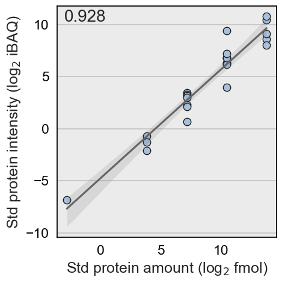

Additional documentation
Step-by-step protocols
- Pre-processing Proteomics Data with the Alpaca Pipeline
- Absolute Quantification of Proteome Abundances with the Alpaca Pipeline
- Integration of Sample Preparation and Subcellular Fraction Enrichment in Alpaca
Usage example
Data import and formatting
Alpaca works with unprocessed proteomics datasets from MaxQuant. The package takes the file proteinGroups.txt, which can be found in the combined folder of MaxQuant output. This dataset is from the exoproteome data published in Ferrero-Bordera et al. 2024. Microbiology Spectrum.
This usage example is available as a Jupyter Notebook in our GitHub repository
from alpaca_proteomics import alpaca
file = 'proteinGroups.txt'
# Data importation
df, id_col, it = alpaca.eats('proteinGroups.txt')
The column Protein IDs was detected to contain your ProteinGroups IDs.
The following intensity methods were detected in the data: Intensity, iBAQ, LFQ
The function returned:
- df is the imported data as a pandas dataframe
- id_col corresponds to the column which was detected to contain the Protein IDs
- it is a dictionary which groups the columns containing intensity data within each intensity method (e.g. LFQ)
In our example, the data contained 3 intensity methods (Intensity, iBAQ, LFQ)
Assistance on the analysis (Optional)
standards_file = 'UPS2.xlsx' # Path to the anchor proteins file
st_proteins = alpaca.eats(standards_file) # Importation of the anchor proteins file (more details on these are listed below)
spiked_samples = ['Before_Induction_01', 'Control_01', 'Diamide_01'] # Samples in which anchor proteins were added
values_per_sample = 1/4 # Valid values per condition
suggested = alpaca.Consultant(df,
st_proteins,
it,
added_samples=spiked_samples,
values_per_sample=values_per_sample)
Based on your data, Median-normalized iBAQ is recommended for the quantification.
The function returns a suggested analysis method and a dataframe with the calculated scores for each intensity method with different normalization approaches. These data is visualized below.
import seaborn as sns
import matplotlib.pyplot as plt
import pandas as pd
plt.figure(figsize=(5,5))
sns.set(font_scale=1.5)
sns.heatmap(suggested.pivot(index='Normalization', columns='Intensity method', values='score'),
annot=True, cmap='viridis', lw=1, cbar_kws={'label': 'Fitting (R$^2$)'})
<Axes: xlabel='Intensity method', ylabel='Normalization'>

Data pre-processing
Based on the suggestions from the function alpaca.Consultant, the analysis can continue with the most suitable parameters
# Data pre-processing
values_per_sample = 1/4
clean_df = alpaca.spits(df,
lfq_method='iBAQ',
formatting=True,
valid_values=values_per_sample,
normalization='Median',
info_cols=['Accession', 'Gene names'])
clean_df.head(5)
3 experimental conditions were identified in the data: Before_Induction, Control, Diamide
Items marked on Only identified by site, Reverse, Potential contaminant have been removed from the dataset.
Dataset formated for further analysis and visualisation.
| Accession | Protein | Sample | iBAQ | Condition | Replicate | |
|---|---|---|---|---|---|---|
| 3 | C0SP82 | YoaE | iBAQ Before_Induction_01 | 2.083660 | Before_Induction | 01 |
| 4 | C0SP93 | AccD | iBAQ Before_Induction_01 | 2.312376 | Before_Induction | 01 |
| 5 | C0SP94 | YhfQ | iBAQ Before_Induction_01 | -2.030633 | Before_Induction | 01 |
| 6 | C0SPA7 | YukB | iBAQ Before_Induction_01 | -8.627621 | Before_Induction | 01 |
| 7 | C0SPB0 | YtcI | iBAQ Before_Induction_01 | 0.498673 | Before_Induction | 01 |
Anchor protein quantification
Absolute quantification using Alpaca is optimised for label-free methods, relying on the addition of a set of anchor proteins at a known amount.
Table 1. Format for the file describing the stock solution of anchor proteins.
| Accession | MW (kDa) | Amount (fmol) |
|---|---|---|
| P02768 | 10.1 | 50 |
| Q9Y6K9 | 65.8 | 100 |
| P05067 | 32.5 | 25 |
| O75475 | 48.2 | 75 |
| Q00653 | 20.9 | 30 |
# Import the file containing the information about the quantification standards proteins
standards_file = 'UPS2.xlsx'
st_proteins = alpaca.eats(standards_file)
# If applicable, define which samples/replicates contain standards proteins
spiked_samples = ['iBAQ Before_Induction_01', 'iBAQ Control_01', 'iBAQ Diamide_01']
# Quantify the fmol present in the measured samples
quant_df, st_proteins, coef, inter, r2 = alpaca.census(clean_df, st_proteins, lfq_col='iBAQ',
filter_col = 'Sample', # Defines which column to filter for the spiked samples
added_samples = spiked_samples) # Adding which samples contain the standars

alpaca.census() adds a column to the processed data with the calculated mol amounts present in the measured samples.
Experimental details
Experimental details (in our example params.txt) can be added as txt, csv or xlsx formats. This file can include the columns described in the following table:
Table 2. Experimental parameters table. This example covers all possible columns. Nonetheless, not all columns are necessary. For example, Enrichment columns (EnrichmentMode, StdDilution, StdVolume) are only used if any enrichment step was performed. More information about this is described in the Enrichment section.
| Condition | SampleVolume | ProteinConcentration | AmountMS | CellsPerML | TotalCultureVolume | ProteinSRM | fmolSRM | Enrichment | EnrichmentMode | StdDilution | StdVolume |
|---|---|---|---|---|---|---|---|---|---|---|---|
| Cond1_t0 | 2.31 | 2.99 | 9.67 | 4.54 | 7.54 | TNAMLN | 4.44 | False | 3.96 | 1.22 | |
| Cond2_t1 | 2.50 | 0.20 | 4.10 | 5.13 | 2.62 | AJFVYC | 4.85 | True | Concentration | 2.43 | 1.51 |
| Cond3_t2 | 7.38 | 6.56 | 2.77 | 3.66 | 3.80 | BYEKSC | 9.71 | True | Enrichment | 5.71 | 8.53 |
Proteome fraction enrichment (Optional)
In case the study focuses in a fraction of the proteome (e.g., membrane proteome or exoproteome), it is likely that during the sample preparation an enrichment step was performed. This module allows to translate the enrichment step to the data based on how the samples were prepared.
Enrichment factors are calculated based on the fmol quantified in the enriched sample to the raw or non-enriched sample:
$$ ER = \frac{fmol_{enriched}}{fmol_{non-enriched}} $$
For that purpose, there are 2 strategies that are currently covered under in Alpaca:
1. The quantification of specific proteins of the analysed fraction before and after the enrichment step using Targeted MS (SRM).
This strategy was described on Antelo-Varela et al. 2019 and relies on using external protocols (e.g., Skyline) to quantify the enrichment step. Enrichment factors can be added to the parameters table under the column Enrichment_Factor. Additionally, the SRM quantified amount for a given protein can be added on the columns ProteinSRM (Accession of the quantified protein) and fmolSRM (Quantified fmol in the analysed proteome fraction).
2. The addition of whole proteins at known concentration before performing the enrichment step.
This approach was described on Ferrero-Bordera et al. 2024 and requires a protein mixture at known concentration added before the enrichment step. Used standards have to be formatted as specified in the table below:
Table 3. Enrichment standards
| Accession | MW (kDa) | StdConcentration (µg/µl) |
|---|---|---|
| P02768 | 10.1 | 2.5 |
| Q9Y6K9 | 65.8 | 0.8 |
| P05067 | 32.5 | 1.2 |
| O75475 | 48.2 | 3.0 |
| Q00653 | 20.9 | 2.0 |
# Enrichment Standard importation
enrichment_std = pd.read_excel('enrichment_std.xlsx')
enrichment_std.sample(3)
| Protein | Accession | Chain length | MW (kDa) | StdConcentration | |
|---|---|---|---|---|---|
| 4 | Lysozyme | P00698 | 129 aa | 14.3 | 17.780320 |
| 2 | Alcohol Dehydrogenase | P00330 | 348 aa | 36.8 | 45.756347 |
| 3 | Soybean Trypsin Inhibitor | P01071 | 181 aa | 20.0 | 24.867580 |
Enrichment factor for condition Before_Induction: 17.97
Enrichment factor for condition Control: 34.65
Data integration
This module connects the protein amounts quantified in the sample and the sample preparation. Thus, allowing to calculate protein amounts to the original state (e.g. bacterial culture, raw culture supernatant). This step yields absolute quantification data (e.g., molecules per cell, fmol / µmol of protein extract)
| Accession | Protein | Sample | iBAQ | Condition | Replicate | fmol | Molecules | fmolSample | MoleculesPerCell | |
|---|---|---|---|---|---|---|---|---|---|---|
| 14063 | P29252 | FolK | iBAQ Diamide_03 | -1.290911 | Diamide | 03 | 17.039546 | 5.304567e+10 | 88.071837 | 2.809453e+09 |
| 14186 | P39120 | CitZ | iBAQ Diamide_03 | 3.895811 | Diamide | 03 | 533.536478 | 1.660948e+12 | 2757.675511 | 8.796864e+10 |
| 6599 | Q01464 | MinD | iBAQ Control_01 | -0.565776 | Control | 01 | 9.159222 | 3.760164e+11 | 624.300851 | 2.457695e+10 |